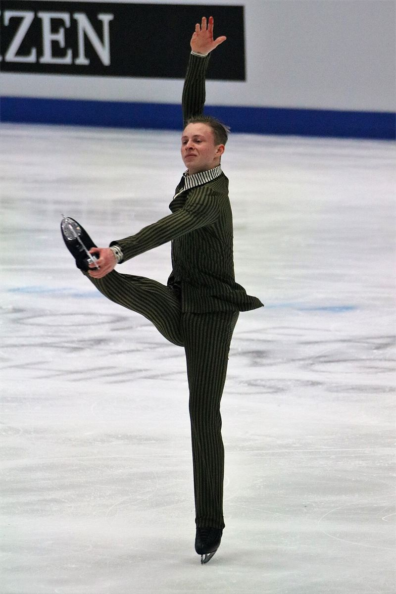

Themes › Theme A Space, time and motion
A.4Rigid body mechanics HL only
Until now we have treated objects as points. Real objects have size and shape, and they can rotate. This topic extends Newton's laws, momentum and energy to spinning wheels, swinging doors and figure skaters. Almost every idea has a linear "twin" you already know from A.1–A.3. The whole of A.4 is HL only.
Knowledge and science
Nature of science
Models. The point-particle model works brilliantly for a thrown ball or a planet's orbit. To design a gearbox or a wind turbine, engineers need a better model: the rigid body, which has size and shape but doesn't bend.
Patterns. Rotation follows the same pattern as straight-line motion. Torque plays the part of force, moment of inertia plays the part of mass, and angular velocity plays the part of velocity. Spotting this analogy means you already know most of this topic.
Global impact. Levers, cranes, flywheels that store energy, gyroscopes that stabilise ships and satellites, and turbines in every power station all rely on rotational mechanics.
ToK: questions to think about
- Is any model permanent? The point particle was "replaced" by the rigid body, but we still use it every day. Are there any models in science, or in any area of knowledge, that never need changing?
- Does an analogy explain anything? Rotation mirrors linear motion almost exactly. Is that a deep fact about nature, or just a convenient way to organise our equations?
- What does "rigid" mean? No real object is perfectly rigid. When is it reasonable to build knowledge on an idealisation that is never exactly true?
- Who owns an idea? Archimedes explained the lever over 2000 years ago. How much of today's physics is really the refinement of very old ideas?
1. Rigid bodies and the centre of mass
A rigid body is an extended object whose shape never changes: the distance between any two of its points stays the same. It can move in two ways:
- Translation: every point moves in the same direction at the same speed. The whole body shifts along.
- Rotation: every point moves in a circle around an axis. All points turn through the same angle, but points further from the axis move faster.
Many real motions are a combination of the two, such as a rolling wheel. For linear motion (A.1–A.3) we can treat the whole mass of a body as if it were concentrated at one point, its centre of mass. A resultant force through the centre of mass gives the body linear acceleration without rotating it. A force whose line of action misses the centre of mass also makes it rotate. You don't need to calculate where the centre of mass is: for a uniform, symmetrical object, it's at the centre.
2. Torque
The turning effect of a force is called its torque $\tau$ (also called its moment). It depends on the size of the force and on where and in what direction it acts:
$F$ is the force, $r$ is the distance from the axis to the point where the force acts, and $\theta$ is the angle between the force and the line $r$. The unit is the newton metre (N m). Don't write it as joules, even though N m = J: torque is not energy.
- The torque is largest when the force is perpendicular to $r$ ($\theta = 90°$, so $\sin\theta = 1$). That's why you push a door at right angles to it.
- A force whose line of action passes through the axis ($\theta = 0$) has no torque, however large it is. Pushing on the hinge side of a door doesn't open it.
- A long spanner gives a larger torque for the same force, because $r$ is bigger.
- Torques have a sense: clockwise or anticlockwise. Choose one as positive, as you choose a positive direction for forces.
Worked example: opening a door
A student pushes a door with a force of 40 N, 0.80 m from the hinges, at 60° to the plane of the door. Find the torque.
$\tau = Fr\sin\theta = 40 \times 0.80 \times \sin 60° = 28$ N m. Pushing at right angles would give the maximum, $40 \times 0.80 = 32$ N m.
Two equal and opposite forces whose lines of action don't coincide form a couple, like your hands turning a steering wheel. A couple has no resultant force, so it causes no linear acceleration, but it does produce a resultant torque, so it causes rotation.
3. Rotational equilibrium
A rigid body is in equilibrium (at rest, or moving and rotating steadily) only if both conditions hold:
1. Translational equilibrium: the resultant force is zero, $\sum F = 0$, in every direction.
2. Rotational equilibrium: the resultant torque about any axis is zero, $\sum \tau = 0$. In other words, total clockwise torque = total anticlockwise torque.
Choosing the axis: for a body in equilibrium, the torques balance about every point, so you can take torques about whichever point you like. Choose a point that an unknown force passes through. That force then has zero torque and drops out of the equation.
Worked example: a plank on two supports
A uniform plank 3.0 m long, weighing 120 N, rests on supports at each end. A person weighing 500 N stands 1.0 m from the left end. Find the force from each support.
Take torques about the left end, so $R_L$ has no torque. Clockwise torques: $500 \times 1.0 + 120 \times 1.5 = 680$ N m. Anticlockwise torque: $R_R \times 3.0$.
$R_R \times 3.0 = 680$, so $R_R = 227$ N, which rounds to 230 N.
Then, from $\sum F = 0$: $R_L = 500 + 120 - 227 = 393$ N, which rounds to 390 N. The left support carries more, because the person stands nearer to it.
4. Describing rotation
As a rigid body turns, every point on it turns through the same angle. So we describe rotation with angles measured in radians:
- Angular displacement $\Delta\theta$ (rad): the angle turned through. One revolution is $2\pi$ rad.
- Angular velocity $\omega$ ($\text{rad s}^{-1}$): the rate of change of angle, $\omega = \dfrac{\Delta\theta}{\Delta t}$. (We use it as a speed, with a sense of clockwise or anticlockwise; the vector treatment isn't needed.)
- Angular acceleration $\alpha$ ($\text{rad s}^{-2}$): the rate of change of angular velocity, $\alpha = \dfrac{\Delta\omega}{\Delta t}$.
A point at distance $r$ from the axis has linear speed $v = \omega r$ (A.2), and a tangential acceleration $a = \alpha r$. Every point has the same $\omega$ and $\alpha$, but points further out move and speed up faster.
Equations of motion: for constant angular acceleration, the four equations of A.1 carry straight over, with $s \to \Delta\theta$, $u \to \omega_i$, $v \to \omega_f$ and $a \to \alpha$:
Graphs work in the same way as in A.1. The gradient of a $\theta$–$t$ graph is $\omega$. The gradient of an $\omega$–$t$ graph is $\alpha$, and the area under it is $\Delta\theta$.
Worked example: a spinning wheel
A bicycle wheel is spun from rest with a constant angular acceleration of 3.0 $\text{rad s}^{-2}$ for 4.0 s. Find its final angular velocity and the number of revolutions it makes.
$\omega_f = \omega_i + \alpha t = 0 + 3.0 \times 4.0 = 12\ \text{rad s}^{-1}$.
$\Delta\theta = \omega_i t + \tfrac{1}{2}\alpha t^2 = \tfrac{1}{2} \times 3.0 \times 4.0^2 = 24$ rad. Revolutions: $\dfrac{24}{2\pi} = 3.8$.
5. Moment of inertia
In linear motion, mass measures how hard it is to change an object's velocity. The rotational version is the moment of inertia $I$: it measures how hard it is to change an object's angular velocity. It depends not only on the mass, but on how that mass is distributed around the axis. Mass far from the axis counts much more than mass close to it.
For a set of point masses: add up mass × (distance from the axis)² for every mass. The unit is $\text{kg m}^2$.
For solid shapes, the formula comes from adding up all the tiny pieces of mass. You don't need to learn these: an exam question will give you the one you need. Some common results, for a body of mass $M$:
| Body (axis through the centre unless stated) | $I$ |
|---|---|
| thin ring or hoop, radius $R$ | $MR^2$ |
| solid disc or cylinder, radius $R$ | $\tfrac{1}{2}MR^2$ |
| solid sphere, radius $R$ | $\tfrac{2}{5}MR^2$ |
| thin rod, length $L$, axis through the centre | $\tfrac{1}{12}ML^2$ |
| thin rod, length $L$, axis through one end | $\tfrac{1}{3}ML^2$ |
A ring has all its mass at the rim, so it has the largest $I$ for its mass and radius. The same rod has a bigger $I$ about its end than about its centre, because more of its mass is far from the axis.
Worked example: point masses
Two 2.0 kg masses are fixed to a light rod, one on each side of the axis, each 0.50 m from it. Find the moment of inertia, then find it again when both masses are moved to 0.25 m from the axis.
$I = \sum mr^2 = 2.0(0.50)^2 + 2.0(0.50)^2 = 1.0\ \text{kg m}^2$. At 0.25 m: $I = 2 \times 2.0 \times 0.25^2 = 0.25\ \text{kg m}^2$, a quarter as much.
6. Newton's second law for rotation
A resultant force gives a mass a linear acceleration ($F = ma$). In the same way, a resultant (unbalanced) torque gives a rigid body an angular acceleration:
$\tau$ is the resultant torque about the axis; $I$ is the moment of inertia about that same axis.
Worked example: a falling mass and a pulley
A string is wrapped around a pulley of radius 0.10 m and moment of inertia 0.020 $\text{kg m}^2$, which turns freely on its axle. A 0.50 kg mass hangs from the string and is released. Find the acceleration of the mass and the tension in the string.
For the mass (down positive): $mg - T = ma$. For the pulley: $TR = I\alpha$, and the string doesn't slip, so $a = \alpha R$. That gives $T = \dfrac{Ia}{R^2}$.
Substitute: $mg - \dfrac{Ia}{R^2} = ma$, so $a = \dfrac{mg}{m + I/R^2} = \dfrac{0.50 \times 9.8}{0.50 + 0.020/0.010} = \dfrac{4.9}{2.5} = 2.0\ \text{m s}^{-2}$.
$T = m(g - a) = 0.50(9.8 - 1.96) = 3.9$ N. The tension is less than the weight (4.9 N) because the mass accelerates downwards. The pulley's inertia acts like an extra 2.0 kg of mass that must also be accelerated.
7. Angular momentum and its conservation
A rotating body has angular momentum, the rotational twin of linear momentum $p = mv$:
Conservation of angular momentum: the total angular momentum of a system stays constant unless a resultant external torque acts on it.
If the moment of inertia of a spinning body changes, its angular velocity must change too, so that $I\omega$ stays the same:
- A figure skater spinning with arms out pulls them in. $I$ decreases, so $\omega$ increases and they spin much faster. Spreading their arms again slows the spin.
- A diver tucks into a ball to spin quickly, then straightens out to slow down before entering the water.
- A collapsing star shrinks enormously, so it spins up. Neutron stars can rotate hundreds of times a second.

Worked example: a spinning skater
A skater spins at 2.0 $\text{rad s}^{-1}$ with arms outstretched, where $I = 3.2\ \text{kg m}^2$. She pulls her arms in, reducing $I$ to 1.0 $\text{kg m}^2$. Find her new angular velocity, and compare the kinetic energies.
$I_1\omega_1 = I_2\omega_2$: $3.2 \times 2.0 = 1.0\,\omega_2$, so $\omega_2 = 6.4\ \text{rad s}^{-1}$.
$E_k$ before: $\tfrac{1}{2}(3.2)(2.0)^2 = 6.4$ J. After: $\tfrac{1}{2}(1.0)(6.4)^2 = 20$ J. The kinetic energy has increased: the extra energy comes from the work her muscles do pulling her arms inwards. Angular momentum is conserved; kinetic energy is not.
Worked example: coupled bodies
A turntable with $I = 0.12\ \text{kg m}^2$ spins freely at 3.0 $\text{rad s}^{-1}$. A disc with $I = 0.060\ \text{kg m}^2$, not rotating, is dropped onto it, centred on the axis, and they turn together. Find their final angular velocity and the kinetic energy lost.
$0.12 \times 3.0 + 0 = (0.12 + 0.060)\,\omega$, so $\omega = \dfrac{0.36}{0.18} = 2.0\ \text{rad s}^{-1}$.
$E_k$: before $\tfrac{1}{2}(0.12)(3.0)^2 = 0.54$ J; after $\tfrac{1}{2}(0.18)(2.0)^2 = 0.36$ J. So 0.18 J is lost as thermal energy while the surfaces slip against each other, just like a perfectly inelastic collision (A.2).
8. Angular impulse
A resultant force acting for a time gives an impulse, which changes linear momentum. In the same way, a resultant torque acting for a time gives an angular impulse, which changes angular momentum:
When the torque changes, the angular impulse is the area under the torque–time graph.
Worked example: area under a torque–time graph
The torque in the graph above acts on a wheel with $I = 1.5\ \text{kg m}^2$, initially at rest. Find the angular impulse and the final angular velocity.
Area: rising triangle $\tfrac{1}{2} \times 2 \times 8 = 8$, rectangle $3 \times 8 = 24$, falling triangle $\tfrac{1}{2} \times 1 \times 8 = 4$. Total angular impulse $= 36$ N m s.
$\Delta L = I\Delta\omega$, so $\omega = \dfrac{36}{1.5} = 24\ \text{rad s}^{-1}$.
9. Rotational kinetic energy and rolling
A rotating body has kinetic energy even if its centre isn't moving, because every part of it is moving in a circle:
This mirrors $E_k = \frac{1}{2}mv^2 = \frac{p^2}{2m}$. Work done by a torque, $\tau\Delta\theta$, changes the rotational kinetic energy.
Rolling without slipping
A wheel or ball that rolls without slipping both translates and rotates. Its centre moves at speed $v = \omega R$, and its total kinetic energy has two parts:
When an object rolls down a slope, the gravitational potential energy it loses is shared between translation and rotation. So a rolling object reaches the bottom more slowly than one sliding without friction. Objects with more of their mass far from the centre (larger $I$ for their mass and radius) put more energy into spinning, and roll down more slowly. In a race down a ramp, a solid sphere beats a solid cylinder, which beats a hoop, whatever their masses and sizes.
Worked example: a ball rolling down a ramp
A solid ball ($I = \tfrac{2}{5}mR^2$) rolls without slipping from rest down a ramp, dropping a height of 1.2 m. Find its speed at the bottom, and compare it with a block sliding down a frictionless ramp.
Energy: $mgh = \tfrac{1}{2}mv^2 + \tfrac{1}{2}\left(\tfrac{2}{5}mR^2\right)\left(\tfrac{v}{R}\right)^2 = \tfrac{1}{2}mv^2 + \tfrac{1}{5}mv^2 = \tfrac{7}{10}mv^2$.
So $v = \sqrt{\tfrac{10}{7}gh} = \sqrt{\tfrac{10}{7} \times 9.8 \times 1.2} = 4.1\ \text{m s}^{-1}$. The mass and radius cancel.
A sliding block gets $v = \sqrt{2gh} = 4.8\ \text{m s}^{-1}$. The ball is slower because $\tfrac{2}{7}$ of its kinetic energy is rotational.
Friction is needed for rolling: it stops the ball from slipping. But for rolling without slipping, the point touching the ramp is momentarily at rest, so this static friction does no work and no energy is lost.
10. Summary: linear and rotational motion
| Linear motion | Rotational motion |
|---|---|
| displacement $s$ | angular displacement $\Delta\theta$ |
| velocity $v$ | angular velocity $\omega$ ($v = \omega r$) |
| acceleration $a$ | angular acceleration $\alpha$ ($a = \alpha r$) |
| mass $m$ | moment of inertia $I = \sum mr^2$ |
| force $F$ | torque $\tau = Fr\sin\theta$ |
| $F = ma$ | $\tau = I\alpha$ |
| momentum $p = mv$ | angular momentum $L = I\omega$ |
| impulse $F\Delta t = \Delta p$ | angular impulse $\tau\Delta t = \Delta L$ |
| $E_k = \frac{1}{2}mv^2 = \frac{p^2}{2m}$ | $E_k = \frac{1}{2}I\omega^2 = \frac{L^2}{2I}$ |
11. Common mistakes
- Using the distance along the object instead of the perpendicular distance to the line of action. Remember the $\sin\theta$.
- Writing torque in joules. Use N m.
- Forgetting the weight of the beam or plank itself, which acts at its centre of mass.
- Checking only one condition for equilibrium. You need both $\sum F = 0$ and $\sum\tau = 0$.
- Using $r$ instead of $r^2$ in $I = \sum mr^2$, or measuring $r$ from the wrong point. Measure from the axis.
- Using degrees in $v = \omega r$ or the rotational equations of motion. Use radians.
- Assuming kinetic energy is conserved when a skater pulls in their arms or bodies couple together. Angular momentum is conserved; kinetic energy changes.
- Leaving out the rotational kinetic energy of a rolling object in an energy calculation.
12. Check your understanding
Why are door handles placed far from the hinges?
Torque $= Fr\sin\theta$. A larger distance $r$ from the axis (the hinges) gives a bigger torque for the same force, so the door is easier to open.
A force acts on a wheel, directed straight through its axle. What torque does it produce?
Zero. The line of action passes through the axis, so the perpendicular distance is zero ($\theta = 0$, $\sin\theta = 0$).
A solid disc and a hoop have the same mass and radius. Which has the larger moment of inertia, and which would win a race rolling down a ramp?
The hoop has the larger $I$ ($MR^2$ against $\tfrac{1}{2}MR^2$), because all its mass is at the rim. The disc wins the race, because less of its energy goes into rotation.
A spinning skater halves her moment of inertia. What happens to her angular velocity and her rotational kinetic energy?
$L = I\omega$ is conserved, so $\omega$ doubles. $E_k = \frac{L^2}{2I}$ with $L$ constant, so halving $I$ doubles the kinetic energy. The extra energy comes from her muscles.
A torque of 5.0 N m acts on a flywheel of moment of inertia 2.5 $\text{kg m}^2$ for 4.0 s, starting from rest. What is its final angular velocity?
Angular impulse $= \tau\Delta t = 20$ N m s $= I\omega$, so $\omega = \frac{20}{2.5} = 8.0\ \text{rad s}^{-1}$. (Or: $\alpha = \frac{\tau}{I} = 2.0\ \text{rad s}^{-2}$, then $\omega = \alpha t = 8.0\ \text{rad s}^{-1}$.)